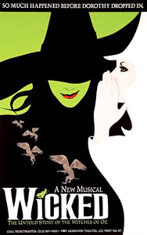

Evita
source: wikipedia
from wikipedia: Evita
Evita is a musical, including score and music composed by Andrew Lloyd Webber and lyrics and book written by Tim Rice. It concentrates on the life of Argentine political leader Eva Perón, the second wife of Argentine President Juan Perón. The story follows Evita's early life, rise to power, charity work, and death.
Released in 1976, the musical began as a rock opera concept album. Its success led to productions in London's West End in 1978, winning the Laurence Olivier Award for Best Musical, and on Broadway a year later, where it was the first British musical to receive the Tony Award for Best Musical.
This has been followed by a string of professional tours and worldwide productions and numerous cast albums, as well as a 1996 film adaptation of the musical. The musical was revived in London in 2006, and on Broadway in 2012, and toured the UK again in 2013–14 before running for 55 West End performances at the Dominion Theatre in September–October 2014.
Hamilton

source : wikipedia
from wikipedia: Hamilton
Hamilton: An American Musical is a sung-and-rapped-through musical by Lin-Manuel Miranda. It tells the story of American Founding Father Alexander Hamilton. Miranda said he was inspired to write the musical after reading the 2004 biography Alexander Hamilton by Ron Chernow. The show draws heavily from hip hop, as well as R&B, pop, soul, and traditional-style show tunes; and casts non-white actors as the Founding Fathers and other historical figures.[1][2][3] Miranda described Hamilton as about "America then, as told by America now".
From its opening, Hamilton received critical acclaim.[5] It premiered Off-Broadway on February 17, 2015, at the Public Theater, where its several-month engagement was sold out.[6] The musical won eight Drama Desk Awards, including Outstanding Musical. It then transferred to the Richard Rodgers Theatre on Broadway, opening on August 6, 2015, where it received uniformly positive reviews and high box office sales.[7] At the 2016 Tony Awards, Hamilton received a record-breaking 16 nominations and won 11 awards, including Best Musical. It received the 2016 Pulitzer Prize for Drama.
The Chicago production of Hamilton began preview performances at the CIBC Theatre in September 2016 and opened the following month.[8] The West End production opened at the Victoria Palace Theatre in London in December 2017, winning seven Olivier Awards in 2018, including Best New Musical.[9] The first U.S. national tour began in March 2017.[10] A second U.S. tour opened in February 2018.[11] Hamilton's third U.S. tour began January 11, 2019, with a three-week engagement in Puerto Rico featuring Miranda as the titular character, Hamilton.
Wicked
source: wikipedia
from wikipedia: Wicked
Wicked is a Broadway musical by Stephen Schwartz and book by Winnie Holzman. It is based on the 1995 Gregory Maguire novel Wicked: The Life and Times of the Wicked Witch of the West, itself a retelling of the classic 1900 novel, The Wonderful Wizard of Oz by L. Frank Baum and the 1939 Metro-Goldwyn-Mayer film The Wizard of Oz.
The musical is told from the perspective of the witches of the Land of Oz; its plot begins before and continues after Dorothy Gale arrives in Oz from Kansas, and includes several references to the 1939 film and Baum's novel. Wicked tells the story of two unlikely friends, Elphaba (the Wicked Witch of the West) and Galinda (whose name later changes to Glinda the Good Witch), who struggle through opposing personalities and viewpoints, rivalry over the same love-interest, reactions to the Wizard's corrupt government, and, ultimately, Elphaba's private fall from grace.
Produced by Universal Stage Productions in coalition with Marc Platt, Jon B. Platt and David Stone, with direction by Joe Mantello and choreography by Wayne Cilento, the original production of Wicked premiered on Broadway at the Gershwin Theatre in October 2003, after completing pre-Broadway tryouts at San Francisco's Curran Theatre in May/June of that same year. Its original stars included Idina Menzel as Elphaba, Kristin Chenoweth as Galinda, and Joel Grey as the Wizard.[1] The original Broadway production won three Tony Awards and seven Drama Desk Awards, while its original cast album received a Grammy Award.
Rent
source: wikipedia
from wikipedia: Rent
Rent (stylized as RENT) is a rock musical with music, lyrics, and book by Jonathan Larson,[1] loosely based on Giacomo Puccini's 1896 opera La Bohème. It tells the story of a group of impoverished young artists struggling to survive and create a life in Lower Manhattan's East Village in the thriving days of bohemian Alphabet City, under the shadow of HIV/AIDS.
The musical was first seen in a workshop production at New York Theatre Workshop in 1993. This same off-Broadway theatre was also the musical's initial home following its official 1996 opening. The show's creator, Jonathan Larson, died suddenly of an aortic dissection, believed to have been caused by undiagnosed Marfan syndrome, the night before the off-Broadway premiere. The musical moved to Broadway's larger Nederlander Theatre on April 29, 1996.
On Broadway, Rent gained critical acclaim and won several awards, including the Pulitzer Prize for Drama and the Tony Award for Best Musical. The Broadway production closed on September 7, 2008, after 12 years, making it one of the longest-running shows on Broadway.[3] The production grossed over $280 million.
CPSC 2030
For more information, visit Lanagara collage CPSC 2030Intermediate website design and development covering information architecture, accessibility and usability. Includes advanced CSS, basic programming (client-side and server-side scripting), the Document Object Model (DOM), handling form data and designing for mobile devices. Students will design and implement a moderately complex website as a class project.